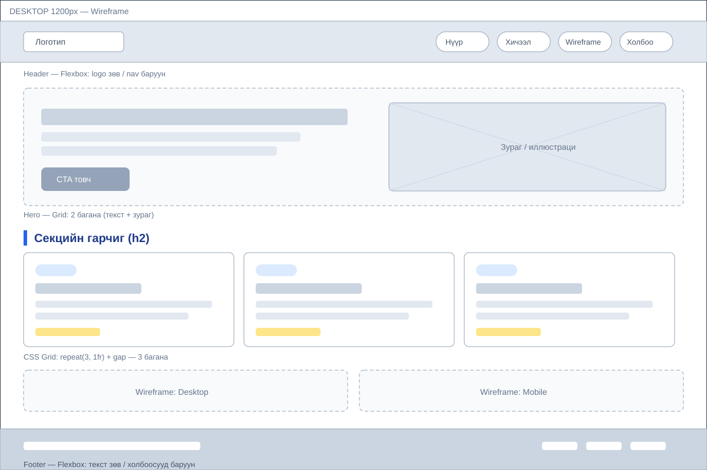
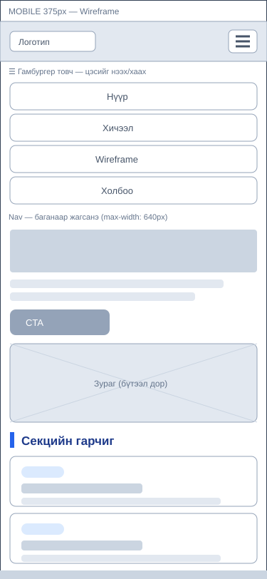

HTML семантик
Бүтэцтэй, уншихад хялбар хуудас бэлтгэх шошгууд.
Mobile-First бодолцоогоор бүтээсэн, бүх дэлгэц дээр тохирсон статик вэб хуудас. Media Queries ашиглан компьютер, таблет, гар утасны хувилбаруудыг нэг файлд шийдсэн.
Хичээлүүд үзэх Wireframe харахЭнэ грид max-width: 1024px болон max-width: 640px media query-гаар баганаараа хувиарлана.
Бүтэцтэй, уншихад хялбар хуудас бэлтгэх шошгууд.
Box model, class соногч, тогтмол дизайн токенууд.
Олон баганатай layout-ыг хослуулан зохион байгуулах.
Media queries, mobile-first, бүтээцийн шилжилт.
Эх макет зурах, хэрэглэгчийн замыг төлөвлөх.
Кодоо хадгалж, вэбээр олон нийтэд түгээх.
Энэ хуудасны компьютер болон гар утасны wireframe-үүд — дэлгэцийн хэмжээнээс хамаарч доогуур баганаар жагсана.


> 1024px
3 баганатай грид, хэвтээ навигацийн цэс.
@media (max-width: 1024px)
Карт 2 багана, hero нэг багана болно.
@media (max-width: 640px)
Нэг багана + гамбургер цэсээр навигацийг өөрчилнө.